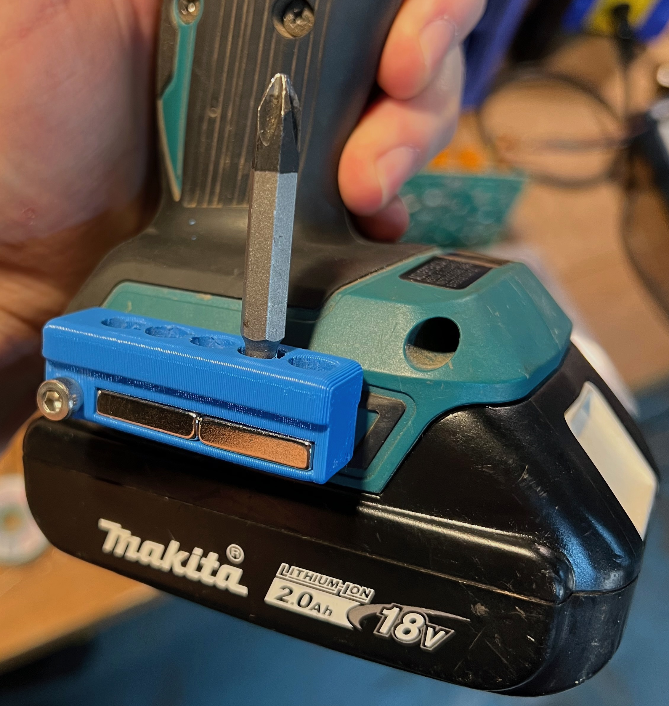

subscribe
subscribe
Makita Bit Holders
As someone who does a lot of DIY work around the house, I found that my drill bits were constantly getting lost or misplaced. I needed a way to keep them organized and easily accessible. I wanted something that would help me avoid stuffing a handful of them in my pocket to fumble through, or leaving them lying out to get lost. After seeing the price of commercially available ones I thought I could design something similar and print it on my 3D printer.
I started by sketching out some ideas on paper, and making note of the dimensions of the bit shanks and magnets, I then moved on to designing the holder using CAD software. I wanted to make sure that the holder would fit enough of my drill bits and be sturdy enough. Download the STL here.
Once I had the design finalized, I exported the file and sent it to my 3D printer. I used a nice blue PLA filament, and printed it vertically so it wouldn't need supports (although it makes it less strong). I'll reassess if I manage to break it.
After a short print, my holder was complete. I was thrilled with how it turned out. The holder is compact and mounts to the extra hook mount on my drill and driver. The holes were a bit tight, so I chucked one in backwards and used it to ream the holes out before pressing in the magnets with my bench vise.
